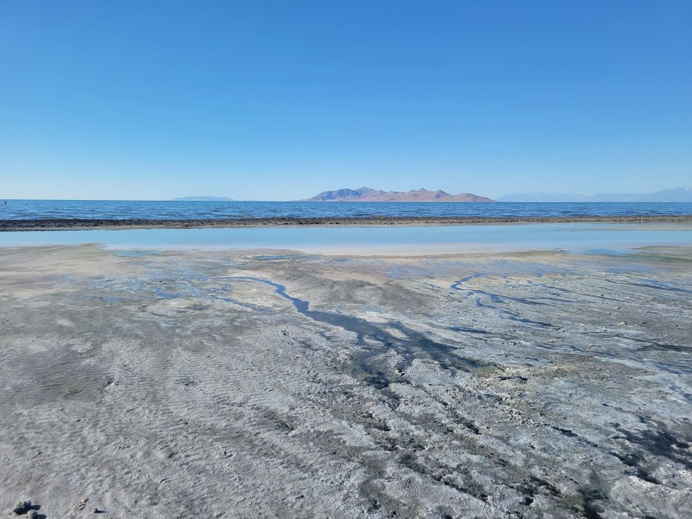
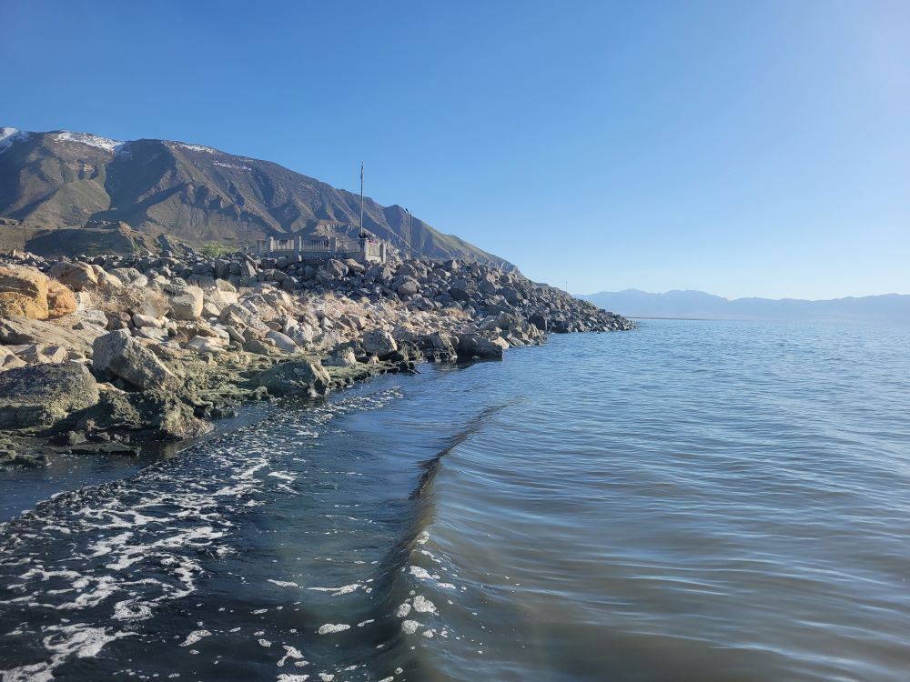
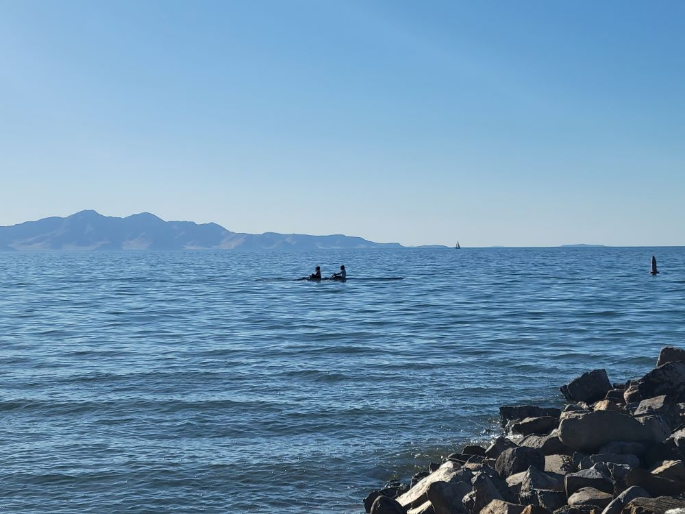
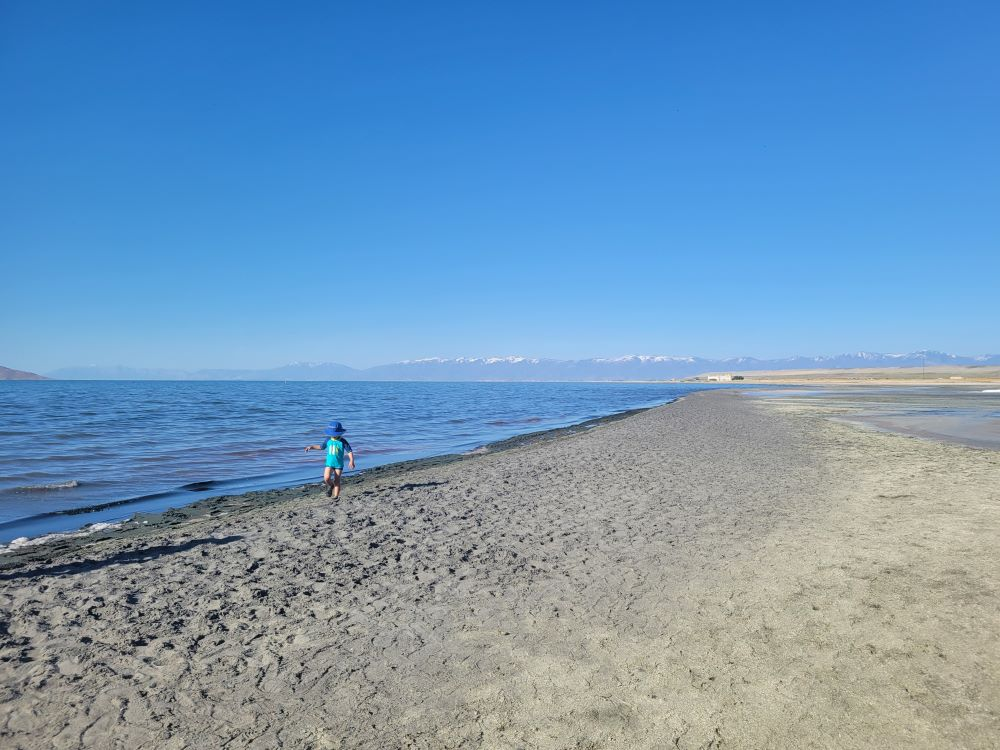
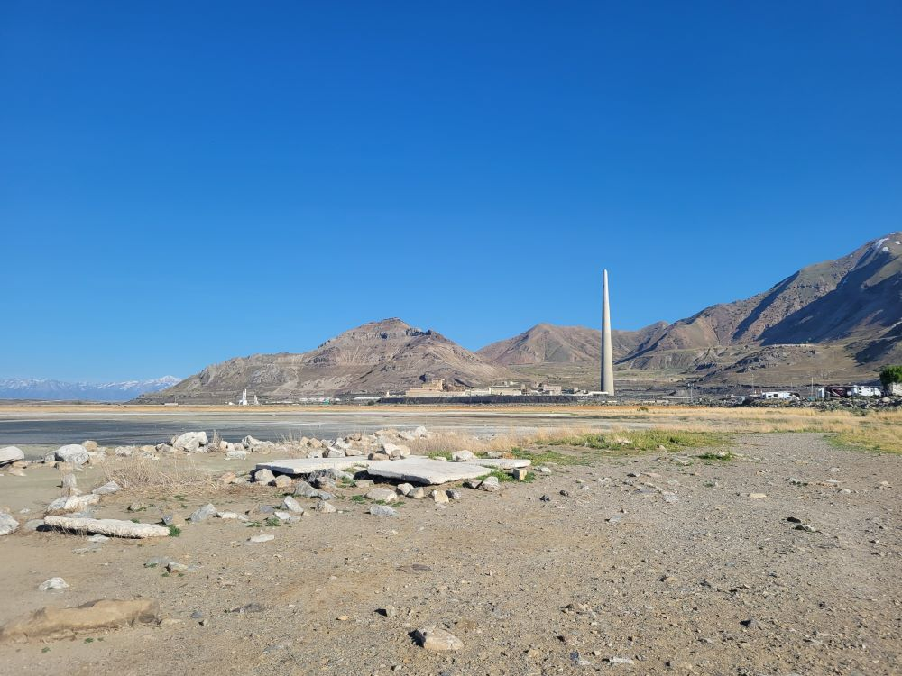

Large lakeside recreation area offering marina access, wildlife viewing, birdwatching, boating opportunities, and sweeping views of North America's largest saltwater lake.
Hours may vary seasonally and during special events.
Day-use fees vary by vehicle type and current Utah State Parks fee schedule.
How to Get There
From Salt Lake City (18 mi): Take I-80 west toward the Great Salt Lake, continue to Exit 102, then follow signed state park roads north to the marina and visitor facilities along the southern shore of the lake.
Overview
Great Salt Lake State Park is a Utah state park on the south shore of the Great Salt Lake in Magna, about 16 miles west of Salt Lake City. The Great Salt Lake is the largest saltwater lake in the Western Hemisphere, a remnant of ancient Lake Bonneville whose salinity often far exceeds that of the ocean, and it supports brine shrimp and millions of migratory birds. The park opened to the public in 1978 and is best known for its marina, the Great Salt Lake Yacht Club, wide views of the lake and Antelope Island, and colorful sunsets over the water. Visitors come to sail, kayak and paddleboard, watch birds, camp near the shore and photograph one of the American West's most unusual landscapes.
Access
The park is a short drive from Salt Lake City and the Salt Lake International Airport, reached by Interstate 80 west and signed park roads leading north to the marina and visitor facilities on the lake's southern shore. The roads are paved, and there is parking at the marina, visitor center and beach areas. Nearly all visitors arrive by car, and the area is close enough to downtown Salt Lake City for an easy half-day trip. Check current lake conditions and park hours before you go, since water levels and shoreline access change from year to year, and drone use and metal detecting require a permit from the visitor center.
Seasons
The park is open year-round, and each season has its own appeal. Spring and fall bring mild temperatures and the best birdwatching during migration, when shorebirds and waterfowl gather along the shoreline. Summer is the busiest time for sailing, paddling and floating, though days can be hot and the lake brings brine flies and a distinctive odor along the shore. Winter is cold and quiet, with crisp air, views of snowcapped mountains and fewer visitors. Sunsets over the lake are colorful in any season, and shifting lake levels can limit marina and boating access, so confirm conditions with the park.
Things to Do
Experience the Unique Waters of the Great Salt Lake
Great Salt Lake State Park provides direct access to the largest saltwater lake in the Western Hemisphere. The lake is known for its exceptionally high salinity, which creates a unique environment unlike most lakes in North America. Visitors can enjoy expansive views of water, mountains, and open skies just a short drive from downtown Salt Lake City.
Float in the Highly Saline Water
One of the park's most popular activities is floating in the lake. The water's high salt concentration creates strong buoyancy, allowing visitors to float effortlessly on the surface. This experience is often compared to floating in the Dead Sea and is one of the most memorable highlights of a visit.
Watch Spectacular Sunsets
The park is famous for its colorful sunsets. As the sun sets over the lake, the water and sky often display vibrant shades of orange, pink, purple, and red. Photographers and sightseers frequently visit during the evening hours to capture some of Utah's most dramatic natural scenery.
Visit the Great Salt Lake Marina
Located within the park, the marina serves as a hub for boating and water recreation. Sailboats, kayaks, paddleboards, and motorboats can access the lake from this popular launch area. The marina also provides excellent opportunities to observe the lake's vast scale and unique landscape.
Explore the Visitor Center
The visitor center features exhibits about the lake's geology, history, wildlife, and ecosystem. Visitors can learn about the ancient Lake Bonneville, the lake's brine shrimp population, and the importance of the Great Salt Lake to migratory birds and regional ecology.
Enjoy Birdwatching and Wildlife Viewing
The Great Salt Lake is a globally important habitat for migratory birds. Throughout the year, visitors can observe a wide variety of shorebirds, waterfowl, and other species that depend on the lake's wetlands and shoreline environments. Spring and fall migrations are particularly rewarding times for birdwatching.
Go Kayaking, Paddleboarding, or Sailing
The lake's open waters attract paddlers and sailors looking for a unique recreational experience. Kayaking, paddleboarding, and sailing allow visitors to experience the lake from a different perspective while enjoying panoramic views of the surrounding mountains and shoreline.
Camp Near the Lake
The park offers RV-friendly camping facilities for visitors who wish to extend their stay. Camping provides opportunities to experience sunrise and sunset over the lake as well as the peaceful atmosphere that develops after daytime visitors leave.
Visit Nearby Antelope Island State Park
Many visitors combine their trip with nearby Antelope Island State Park, which offers hiking trails, wildlife viewing, beaches, and opportunities to observe free-roaming bison, antelope, mule deer, and other wildlife native to the region.
Top Trails
Great Salt Lake Shoreline Walk
Length: Variable
Elevation Gain: Minimal
Difficulty: Easy
Visitors can walk along the shoreline near the marina and visitor center to explore salt-encrusted beaches, observe birdlife, and experience the lake's unique scenery. The flat terrain makes this suitable for most visitors.
Antelope Island Trails (Nearby)
Length: Multiple trail options
Elevation Gain: Varies
Difficulty: Easy to Strenuous
Located a short drive from Great Salt Lake State Park, Antelope Island offers some of the region's best hiking opportunities. Trails range from easy shoreline walks to more challenging routes leading to mountain summits with sweeping views of the lake and surrounding basin.
Visitor Centers
The park visitor center is typically open from 9am to 5pm and has exhibits on the lake's geology, history, wildlife and ecosystem, along with a gift shop. It is also where visitors obtain permits for drones and metal detecting. Staff can answer questions about boating, birdwatching and current lake conditions. The park does not offer staff-led tours or talks, so most visits are self-guided, and the marina office handles boat slips, tours and rentals.
Camping and Lodging
The park has a small campground near the visitor center with partial-hookup sites and one full-hookup site overlooking the lake, plus two primitive tent-only beach sites; reservations are made through Utah State Parks. Showers are available only to campers and boat-slip renters. Most lodging is in Salt Lake City, about 20 to 30 minutes away, which has a full range of hotels, motels and bed-and-breakfasts. Nearby Magna and West Valley City have more basic motels, and Park City, Ogden and Tooele are within about an hour. Campgrounds and cabins in the Wasatch Mountains also lie within roughly an hour.
Sources: Utah State Parks and Great Salt Lake State Park visitor information covering the marina, visitor center, boating, camping, wildlife viewing, birdwatching, and recreational opportunities. https://stateparks.utah.gov/parks/great-salt-lake/Utah State Parks - Great Salt Lake State Park
Additional information verified through Visit Utah and Visit Salt Lake resources covering floating, sunsets, paddling, wildlife observation, and nearby Antelope Island State Park attractions. Visit Utah - Great Salt Lake State Park
Visit Salt Lake - The Great Salt Lake
This article uses material from the Wikipedia articles and official tourism pages for the https://stateparks.utah.gov/parks/great-salt-lake/Great Salt Lake State Park, which are released under the Creative Commons Attribution-Share-Alike License 3.0. Additional information from Utah State Parks.




